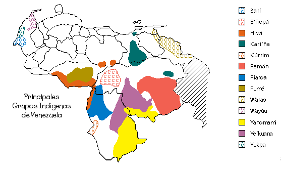
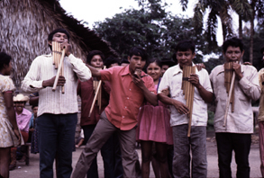
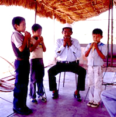
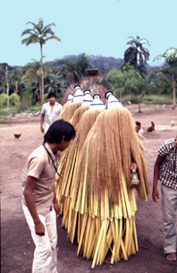
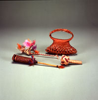
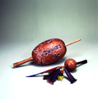
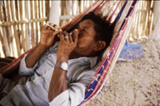
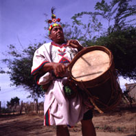

HOME
NUESTRA MUSICA
Dr. Emilio
Mendoza
II. Región Indígena

Región Indígena
En Venezuela existen
31 grupos indígenas
distribuídos
principalmente en la Región de Guayana, además de partes
de la Región de los Llanos, la Región Nor-Oriental y del
Zulia. Aunque las culturas de estas comunidades permanecen aun aisladas
de la cultura general venezolana, ellas son de gran importancia para
nuestro
país ya que pertenecen a los habitantes originales de nuestras
tierras.
Vamos a conocer la música de algunos de los grupos
indígenas
venezolanos:
Barí
Esta etnia desciende
del grupo indígena
Chibcha,
y habita al sur de la Sierra de Perijá en el oeste del estado
Zulia.
Los Barí se conocían como los “motilones bravos” por la
fuerte
resistencia a la colonización misionera. Utilizan flautas de
tapara
y caña de bambú, de las cuales se pueden nombrar las
flautas
globulares Darikbará y Doksará hechas de taparas
esféricas
alargadas y redonditas respectivamente. Las flautas de caña son
traversas de un solo orificio, la más larga llamada
Buirokdorá.
Tienen cantos para muchas actividades, ritos y fiestas, con la ausencia
de la maraca, donde el canto es lo más sagrado de los
Barí
ya que les sirve de comunicación con sus muertos o “basunchimba”
que viven en el cielo. Hay ritos de nacimiento, adolescencia,
matrimonio,
consagración del tabaco, inauguración de un bohío
y la Fiesta del Bollito, esta última siendo una acción de
gracias dirigida a los basunchimba por la abundancia del plátano.
E’ñepá o Panare
Los
E’ñepá, conocidos también
como
Panare, se encuentran en el estado Bolívar al sureste del
Orinoco
frente a los estados Apure y Guárico. Son muy conocidos al igual
que los Ye'kuana, por su bellos diseños en cestería,
especialmente
en las Wapas. En el verano realizan danzas con extensos preparativos de
comida, bebida e instrumentos musicales para las celebraciones. Tienen
flautas de pan Are’re’, la maraca shamánica, largos clarinetes
de
sonidos profundos llamados Karamataimë. Las mujeres utilizan un
bastón
sonajero de picos de tucán y cascos de váquiro, el
Chirijko,
así como juguetes musicales. Una de las fiestas principales es
la
Fiesta del Guayuco, donde los niños son iniciados con su primer
atuendo.
Hiwi o Guajibo
La etnia
indígena Hiwi, también
conocida
como Guajibo, habita en el sur de los estados Apure, Guárico y
en
las cercanías de Puerto Ayacucho en Amazonas. Tienen
bellos
cantos, fiestas, bailes e instrumentos muy singulares: Utilizan una
maraca
shamánica, Tsitsiíto, cuya tapara es tallada con surcos,
adornada con plumas coloridas de aves, y tiene adentro unas piedras
mágicas.
Un aerófono interesante de esta comunidad es el Ovevi Mataeto,
que
consiste de un cráneo de venado cubierto con cera negra, el cual
se sopla y se ejecuta en pares, bailando al mismo tiempo en las Fiestas
del Guarapo. Los Hiwi ejecutan sus flautas de carrizo Jiwi, las cuales
sólo las pueden ejecutar los hombres adultos.
Kari’ña
Los Kari’ña o
Caribe se ubican principalmente
en
el estado Anzoátegui, con una parte menor en el estado
Bolívar.
Es la etnia que más influencia ha tenido en la cultura
venezolana,
donde resalta el Mare-Mare y su derivación criolla en las
Parrandas
de Carrizos en Navidad y en el Mare-Mare de las comparsas de Carnaval.
Aquí se utilizan los carrizos llamados Mare por los
Kari'ña
o también Verékushi, además de
otros instrumentos.
Los Kari’ña recuerdan a sus ancestros en el Día de los
Muertos
con el ritual Akaatompo, que incluye danza y el canto acompañado
con el Cuatro. Otros géneros derivados de los Kari’ña son
los Carrizos de Cumanacoa en Anzoátegui y los Carrizos de San
José
de Guaribe en Guárico.
Kúrrim o Kurripaco
Los Kúrrim se encuentran en el suroeste del
estado
Amazonas. Tienen fiestas con cantos y baile, como la fiesta de
iniciación
de los varones y hembras, fiestas para festejar cosechas o simplemente
para el intercambio de alimentos. Utilizan bastones para dar el ritmo
del
baile y flautas de diferentes tamaños con nombres de peces. Las
flautas Yapurutú son instrumentos gigantes de más de un
metro
y medio de largo, las cuales no tienen huecos para los dedos. Sin
embargo,
logran producir varios sonidos al soplar con diferentes intensidades.
Las
mujeres no pueden ver las flautas, las cuales se mantienen guardadas
bajo
el agua del río. Con el mismo nombre del pez bagre grande, las
trompetas
Kulirrina producen sonidos graves y profundos.
Pemón
La etnia Pemón habita en la zona de la Gran
Sabana
y cuenca del río Caroní, en el sureste del estado
Bolívar.
Tienen cantos variados de temas de amor o Puenín y cantos
mágicos
como los Tarén, acompañados por la flauta de carrizo
simple
Luwé o también con la flauta pequeña de
caña
Kaikara. Tienen cantos y danzas escenificados además de bailes
de
grupo en círculo como el Parischará y el Tukui. En estas
danzas los mismos integrantes bailan y tocan las Kamai o trompetas de
yagrumo,
un bastón sonajero de pezuñas de váquiro Ke’wei,
un
tambor de doble parche, el Samburá, y flautas de tibia de venado
o mono.
La influencia de misioneros ingleses en los
Pemón
ha resultado en la generación de cantos adaptados de procedencia
cristiana con el nombre de Aleluya, desde el siglo pasado, y más
recientemente, el San Miguel.
Piaroa
Los Piaroa residen en
la parte noroeste del estado
Amazonas
y es uno de los grupos indígenas más numerosos del
país.
Los cantos se utilizan para transmitir la tradición
mitológica
de la etnia y para curaciones. Entre muchas fiestas como la del
Guarapo,
Yopo y la de las Avispas, se destaca principalmente la Fiesta del
Warime.
Los Piaroa tienen una gran variedad de instrumentos musicales,
especialmente
de aerófonos: flautas de hueso de venado, el Muo’tsa o
mirlitón
de dos pedacitos de bambú amarrados con una hojita en el medio
que
se sopla para imitar a un viejito hablando. Cuentan con la flauta de
cántaro
o Worá, que es el instrumento más importante y sagrado,
representando
al grito del jaguar. Tienen pitos, trompetas y flautas de caña y
hueso de animales, como la Ñamèiwe’ka, la flauta nasal
Chuwo
y el par de flautas largas de caña Da’e que representan la
culebra
de agua. Además, los Piaroa usan bastones sonajeros y la maraca
de cestería llamada Wiwi, una de las maracas más bellas de
nuestra tierra. Tienen el palo
zumbador Imuts wo que suena al girar la
cuerda a la cual está atado y la concha de tortuga suena al
frotarla
con los dedos. Los instrumentos se tocan solos o en ensambles,
especialmente
para la Fiesta del Warime.
Pumé o Yaruro
En el centro del
estado Apure se encuentra la etnia
Pumé,
también conocida como Yaruro. Los Pumé son excelentes
talladores
de piedra y calabaza, representando animales, pájaros y escenas
variadas. Mantienen cantos con danza en trance durante toda la noche,
como
el ritual en honor a la diosa-madre lunar Kumá, donde el
shamán
canta acompañado de su maraca ceremonial y le responden en coro
las mujeres. La maraca sagrada Chijirí es el instrumento
principal,
llena de piedras y semillas de los espíritus, y cuya tapara
está
grabada con dibujos geométricos representando a la serpiente
anaconda,
a la diosa Kumá con los brazos extendidos, y a veces a un
viejito
arrugado. La participación de las mujeres en los rituales es muy
importante, ya que pueden ser shamán, entonando los cantos que
son
la base de la tradición Pumé.
Warao
En la extensa zona de
la desembocadura del Orinoco,
entre
cientos de ríos y caños, se ubica la etnia Warao o “gente
de embarcación”. Viven en palafitos a las orillas de los
ríos
y transitan en canoas. El shamanismo es muy importante en los Warao,
utilizando
la maraca sagrada Hebu-Mataro y cantos para la
curación
mágico-religiosa
por el shamán junto al humo del tabaco. Esta es la maraca
más
grande de Venezuela, adornada con bellas plumas y dibujos. Los Warao
tienen
rituales al moriche o “arbol de la vida” que constituye una fuente
integral
de alimentos y materiales de construcción y herramientas. El
baile
de las “maracas pequeñas” para el ritual de fertilidad utiliza
el
sonajero de semillas Sewei, que se ata a los tobillos o a un
bastón,
y el clarinete Isimoi. Celebran la Fiesta del Najanamu dedicada al
Kanogu
o “nuestro abuelo”. Usan además flautas de hueso y de madera,
trompetas
de caracol y bambú. Por influencia de los misioneros europeos,
los
Warao incorporaron el violín a sus instrumentos, llamado en su
versión
nueva, el Seke-seke.
Wayúu o Guajiro
Esta etnia habita en
la Península Guajira
tanto
en territorio colombiano como venezolano, lo que conforma en este
último
caso parte del estado Zulia. Los Wayúu son pastores y mantienen
un intenso mundo espiritual de mitos y costumbres, siendo los shamanes
en su mayoría femeninos. Utilizan para el pastoreo un clarinete
pequeño de caña, la Sawawa, y uno más grande, el
Wootoroyoi.
Los bailes y
rituales se acompañan con la maraca Isirra o con el
tambor-caja Kaashi, como el Baile de la Yonna y de la Chicha. Manifiestan
cantos shamánicos individuales y utilizan instrumentos como la
Trompa
para la comunicación social y entretenimiento personal. La
Trompa,
instrumento pequeño de una lengüeta de metal que se toca
colocada
entre los labios de la boca, es originaria de Europa, y es conocida
generalmente
como birimbao, guimbarda o Jew’s Harp. De los Wayúu
además
tenemos el arco de boca Talirai, una flauta pequeña y globular
de
barro o calabaza, llamada Wá’wai y otra, la flauta Massi, de
hueso
o caña.
Yanomami
Los Yanomami se
encuentran en la Sierra Parima,
alrededor
del Alto Orinoco, entre Venezuela y Brasil. Su único instrumento
es el palo zumbador, el Imi-tsuwo, pero poseen un alto desarrollo de
técnicas
de la voz que utilizan para inumerables cantos en rituales y fiestas.
Con
sólo la voz, producen una gran cantidad de sonoridades
diferentes,
como para los Herimou, cantos de cacería; para los Heku-ramou o
cantos a los espíritus; y los Wayamo o cantos de noticias entre
dos hombres. Producen gritos rítmicos, modificaciones guturales
de la voz, nasalización, alaridos y gárgaras,
además
de entonación de pocas notas alternadas y repetidas.
Ye’kuana o Makiritare
Los Ye’kuana residen
entre los estados Amazonas y
Bolívar,
a lo largo de los ríos Caura, Alto Ventuari y sus tributarios.
Utilizan
en las ceremonias cantos sin instrumentos para celebrar con bailes y
fiestas
la cosecha de yuca o la inauguración de una churuata nueva o
casa
grande multifamiliar en forma cónica. El regreso a casa
después
de la pesca y cacería lo celebran con el acompañamiento
adicional
del tambor Samhúra, el bastón de sonajas de semillas o
pezuñas
de animales, con el Kodedo o concha de morrocoy que se frota con la
mano,
las flautas de pan Seku seku y clarinetes largos de bambú, los
Tekeyé
Wanna. Los Ye’kuana llevan collares de semillas cruzados en el pecho
que
suenan al danzar. Para entretenerse tocan flautas de hueso de venado,
Kawadi
Dejé, y flautas de caña, Hito Wichu. En los rituales
shamánicos
emplean la maraca Madaka, adornada con dos shamanes labrados en madera.
Para comunicarse al navegar en sus curiaras, los Ye’kuana utilizan la
trompeta
de caracol
Hanawkwa, así como también trompetas de
cuerno de ganado importado, o de cabeza de venado.
Yukpa
Los Yukpa habitan en la
Sierra de Perijá, en
el
oeste del estado Zulia, en el límite con Colombia al norte de
los
Bari. En el trabajo previo así como durante las fiestas del
maiz,
en época de cosecha, se acompañan con cantos, bailes y
bebida
de chicha fermentada. Los Yukpa no utilizan maracas ni tambores. En los
defiles fúnebres, ejecutan la flauta Aiúbu hecha de
fémur
humano, que simboliza la voz del muerto, además de los cantos,
gritos
y el sonido de los machetazos al abrir la brecha en la maleza para el
traslado
de la osamenta al depósito comunal. Tienen flautas en forma de
hacha,
la Atunja; flautas de caña, la Jutka, de tibia humana, la
Penanucha;
flautas de pan llamadas Jok’ku, así como trompetas y clarinetes.
Poseen un arco musical de caña, el Guakácara, que es
ejecutado
con un palito humedecido. Se coloca un extremo del arco en la boca y el
sonido resultante sólo se oye por el mismo ejecutante.
Los varones pueden
optar para ser candidatos a ser
chamanes,
llamados Tomaira, si éstos han tenido sueños en donde
escucharon
una canción, que al despertar, tienen que poder repetirla y
probar
su originalidad. Igualmente hacen certámenes de las canciones
que
cada chamán pueda tener en su repertorio y utiliza además
para las ceremonias de nacimiento, casamiento, entierro,
imposición
de nombre, caída del ombligo y para fiestas de cosecha. En estas
ceremonias el chamán enseña y guía a los
participantes
a cantar y bailar las canciones respectivas al rito.